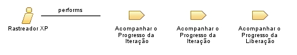

| Role: Rastreador XP |
 |
|
Relationships
 |
||
| Primary Performs | ||
|---|---|---|
| Process Usage | ||
Main Description
|
As três coisas básicas que o Rastreador XP irá monitorar são o plano de liberação (histórias de usuário), o plano de iteração (tarefas) e os testes de aceitação. O rastreador também pode monitorar outras métricas, o que pode ajudar na solução dos problemas que a equipe estiver enfrentando. Um bom Rastreador XP tem a capacidade de recolher as informações sem perturbar o processo de forma significativa. |
| Copyright (c) 2002, 2006 IBM Corporation e Object Mentor. Todos os Direitos Reservados. Este programa e o material que o acompanha são disponibilizados sob os termos da Eclipse Public License v1.0, que acompanha esta distribuição e está disponível em http://www.eclipse.org/legal/epl-v10.html. Colaboradores: IBM Corporation e Object Mentor - implementação inicial |